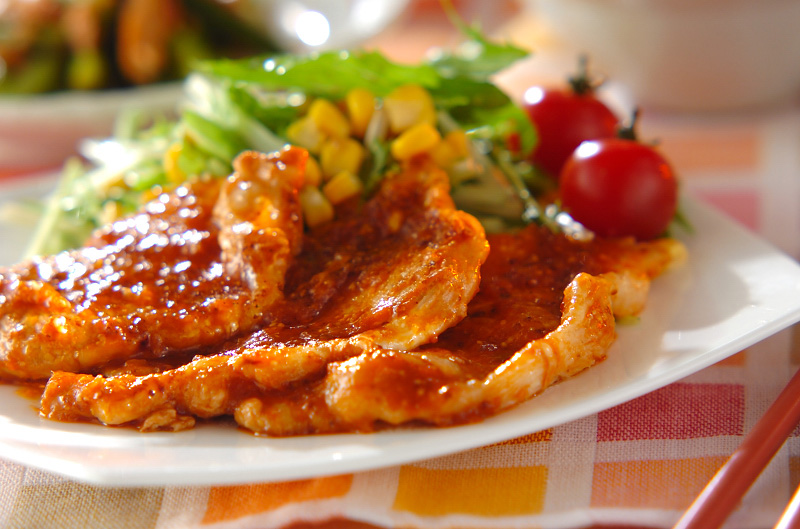

Shougayaki

What is Shougayaki?
Shogayaki is a dish in Japanese cuisine made using pork.
Shōga means ginger, and yaki means grill or fry. It can also be made with beef,
but the pork version is so much more popular that the term "shōgayaki" generally
refers only to pork in Japan. It is the second most popular Japanese pork dish after tonkatsu.
Ingredients
- Pork
- Flour
- Salt
- Pepper
- Ginger
- Onion
- Soy Sauce
- Cooking Sake
- Mirin
How to make Shougayaki
- Mix together the sauce ingredients (grated and julienned ginger, optional grated onion, soy sauce, mirin and sake) in a small dish until combined.
- Lay the thin pork loin strips on a plate. Sprinkle with flour and season with salt and pepper on both sides, loosely rubbing
in the flour to make sure it’s well coated. This will help soften the meat and hold in the juices while cooking.
- Heat a large frying pan over high heat and drizzle in the vegetable oil.
- Once hot, lay in the coated pork loin steaks and fry for around 2-3 minutes on the first side,
then flip and add in the sliced onion around to cook alongside the pork for another 2-3 minutes. Pork should be a light golden brown by this point.
- Pour over your seasoning sauce, and allow it to cook down and soak into the pork. Once the sauce has evaporated, switch off the heat.
- Serve hot with your choice of garnishes: shredded cabbage (or lettuce), tomato, cucumber, rice and a sprinkle of sesame seeds.